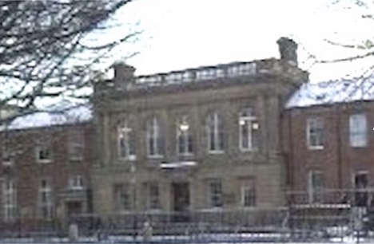

-1-MasterItem.svg)
Stories of Westminster United Church & its People / Page
57
North Shields, the city the Christies moved into in 1891, had a nine hundred
year old history. The
local census listed David’s employer as an English Presbyterian Church. However, ‘English’ as the
political identity for that area of Britain, had not always been a certainty,
even after 927 AD.
The north of Britain (Scotland) was part of the Roman empire until the fifth
century AD. The Pax
Romana (peace, at the point of a sword — Jesus had something to say about that!) kept the many
tribes of the region more-or-less away from each others’ throats. But after the Romans gave up
control the ensuing centuries were a melee of skirmishes, battles, mass
slaughters, tentative
alliances and shifting kingdoms. As with the shifting sands of Europe over later
centuries
who would have been foolhardy enough to try drawing a definitive map?
Politically the Kingdom of Northumbria, the much disputed area between the north
(Scottish)
and the south (English) ceased to exist in 927. It was incorporated into
England, as an Earldom,
by Athelstan, the first king of a united England. Nevertheless the cross-border
combat
in the area continued until 1707 when England/Scotland became one country.
In 1891 Northumbria was by then Northumberland,incorporating the whole drainage
area of the
Tyne River. The town of North Shields located at the mouth of the river where it
emptied into the
North Sea was, as it had always been, a centre of fishing and, of course, fish
processing. The name
Shields comes from Old English ‘schele,’ meaning shelter or hut. Fishermen, Scottish and English,
had long built their huts or shields, along the water front.
David’s church, Northumberland Square Presbyterian Church (picture)
apparently flourished and the family prospered in their posting. Their
first child, Margaret, was born. She was then followed by Fleming,
Catriona, Enid and Isobel. No certain data exists concerning this
period of David’s ministry. Scotland called them back in 1897.
David accepted a call to Nicholson Street United Presbyterian Church
in Edinburgh. At his induction in February, David’s father-in-law, Rev.
Fleming, preached and introduced David to the congregation in the morning. After
lunch David
preached. That evening Rev. Fleming preached again.
Table
of Contents

Rev. DAvid christie